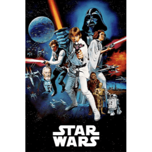
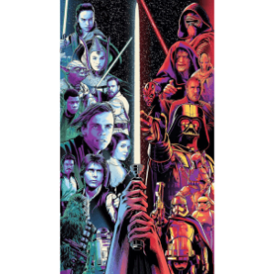
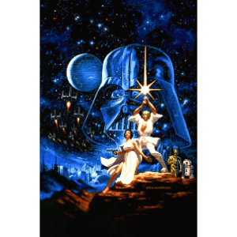

Há muito tempo, em uma galáxia muito, muito distante ...
A saga
A grandiosa saga do mundo Star Wars conta com 9 filmes criados entre 25 de maio de 1977 até 2019. Seu primeiro filme se chamava apenas Star Wars e mesmo assim foi um fenômeno nacional, seus primeiros filmes contavam com o trio mais conhecido na saga, Luke Skywalker, Han Solo e Princesa Leia, juntos fazem parte da Aliança Rebelde que tenta derrubar o Império Galáctico. A série contava com filmes novos a cada 3 anos, porém depois de 16 anos sem lançar um filme foi criada a trilogia prequela que começou em 1999 com The Phantom Menace. Em 2008 foi lançado o filme de animação Star Wars: The Clone Wars onde foram arrecadados cerca de 4,41 bilhões de dólares.
Fonte:wikipédia Saiba maisPersonagens
Com toda a certeza não podemos falar dos personagens sem lembrar do trio mais conhecido da saga : Luke Skywalker, Han Solo, Princesa Leia e o maior vilão da saga Darth Vaider, além disso os filmes perderiam totalmente a graça sem o Chewbacca, R-3PO, R2-D2 e o último robô BB-8 e o personagem mais amado e atrapalhado da saga Jar Jar Binks. Mestre Yoda é o primeiro Jedi e treina a linha de frente da resistência para o fim do governo do Império Galáctico e do lado negro da força. Toda a trama se inicia a partir da sede de poder do Senador Darth Sidious.
Fonte:wikipédia Saiba maisHistória
Diferente de como todos pensam Star Wars não é um filme de ficção científica e sim um filme de fantasia dos cinemas com drama, romance, humor e luta entre o bem e o mal. Tudo começa anos atrás entre planetas de todos os tipos, desérticos, super habitados e selvagens, porém todas tem atmosfera e gravidade parecidas com a da terra. O centro do filme é a disputa entre o bem e o mal, o filme conta a tragédia pessoal de Anakin Skywalker, que é um jedi que acaba indo para o lado negro da força se transformando no vilão Darth Vader, líder supremo do Império Galáctico. Os jedis são uma força de resistência que lutam contra as forças do mal. O filme conta com humanos, alienígenas, naves espaciais e muitas viagens pelo universo.
Fonte:wikipédia Saiba maisCriação
A saga foi criada pelo cineasta George Lucas e conta com uma série de nove filmes de fantasia cientifica. O primeiro filme foi responsável pelo início da era dos Blockbusters, superproduções que fazem sucesso nas bilheterias e viram franquias, na época teve a maior bilheteria de todos os tempos e ganhou sete prêmios no Óscar. A empresa Century Fox descartou a idéia que o filme iria fazer sucesso e deu todos os direitos a George Lucas, porém com o sucesso do filme ele pode criar sua própria produtora chamada Lucasfilm utilizando o dinheiro ganho com o filme, que teve uma versão de natal exibida na TV CBS.
Fonte:wikipédia Saiba mais